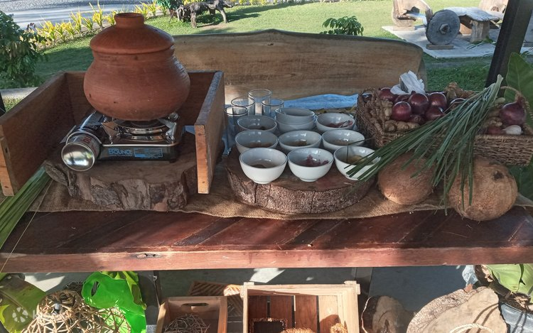

ABOUT THE CULINARY TOURS
Albay Culinary Tours offer a deep dive into the region's vibrant food scene. This isn't just about eating; it's about understanding the land and the people. Visitors explore everything from bustling wet markets to cozy home-style kitchens, sampling a diverse array of traditional Bicolano meals.

A TRADITION OF TASTE
Bicolano cuisine is deeply rooted in the clever use of local ingredients like taro leaves and coconut. Iconic dishes such as Laing and Pinangat have been perfected over generations, representing a rich history of slow-cooking and bold flavoring that remains a source of immense pride for the province.
FACTS
What makes our food unique.
- Primary Base: Coconut Milk (Gata)
- Specialties: Laing, Pinangat, Inulukan
- Experience: Farm-to-Table Visits
- Culture: Heirloom Recipe Focus
TRAVEL TIPS
Maximize your food trip.
- 😋 Appetite: Start the tour on an empty stomach!
- 🗣️ Interaction: Don't hesitate to ask chefs about ingredients.
- 👟 Comfort: Wear loose clothing and walking shoes.
- 🌶️ Tolerance: Always specify your spice preference first.
THINGS TO DO
The ultimate food checklist.
For a unique dessert, try the Pili Nut glazed treats—they are Albay's finest sweet snack!